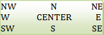

Le langage python 3 et l'Interface
Graphique Tkinter
|
| Le widget Button |
| width |
Largeur du bouton en caractère |
| height |
Hauteur du bouton en lignes |
| text |
texte à afficher sur le bouton., |
| anchor |
alignement du texte dans le bouton. par
défaut=CENTER  |
| bd ou
borderwidth |
Épaisseur de la bordure en pixels. Défaut=2.
améliore l'effet de relief |
| bg ou
background |
Couleur du bouton. "red", "blue", "green",
"yellow", Voir liste des couleurs |
| command |
Pour
préciser la fonction ou la méthode qui sera exécutée quand le bouton sera cliqué. exemple: Si la fenêtre
principale s'appelle fp, on peut utiliser un bouton EXIT pour quiter ex = Button(fp, text="EXIT", command = fp.destroy) |
| font |
Fonte du texte du bouton. On a deux façons possible pour la préciser: Chaîne constituée du nom de la fonte suivi (optionnellement) de sa taille et des formats (normal, italic, bold, underline, overstrike) font="arial 8 italic bold" Si le nom de la fonte contient un espace, il faut utiliser un tuple qui commence par le nom de la fonte suivi optionnellement de sa taille et de son format: font=("Arial Black", 10, "bold italic underline") |
| image |
Image à afficher sur le bouton (à la place du
texte). Préférer les images .gif |
| justify |
Permet de justifier le texte (LEFT, CENTER,
RIGHT) dans le cas où celui-ci contient des \n pour retourner à la ligne |
| cursor |
Curseur
de la souris quand celle-ci survole le widget |
| relief |
Relief
du bouton. Défaut = RAISED |
| overrelief |
Relief du bouton quand il est survolé par la
souris |
| padx |
Marge horizontale du texte par rapport aux
limites du bouton padx=3 => 3 pixels, padx='3m' => 3 mm, padx='1c' => 1 cm, padx='0.5i' => 0.5 inch |
| pady |
Marges verticales |
| state |
Permet d'activer (NORMAL) ou de désactiver
(DISABLED) un bouton je n'ai pas bien compris le rôle de la valeur ACTIVE |
Exemple:
B2 = Button(fp, text = "EXIT", padx='1c', borderwidth=10, bg='pink', command=fp.destroy, font="arial 8 italic bold")
| Le widget Button accepte les méthodes standards (universelles) communes à
tous les widgets plus les méthodes ci-dessous |
|
| .invoke() |
Appelle le callback du bouton défini par
l'option commande comme si le bouton avait été cliqué |
| .flash() |
fait brièvement flasher le bouton |
On peut positionner ou modifier des options d'un bouton après sa création grâce à la méthode .configure
B2.configure(bg = "blue", state=DISABLED)Voir l'exemple